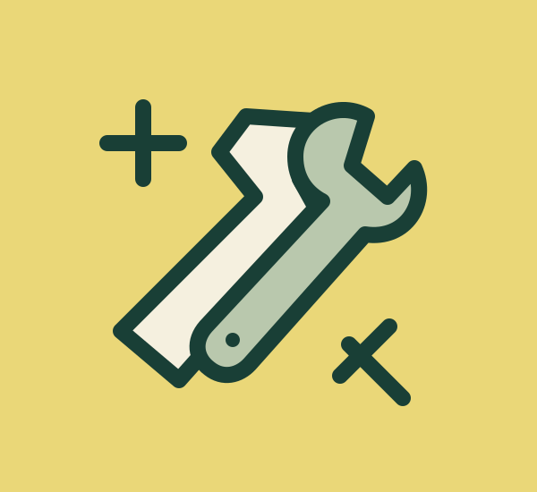

01
HogarFerretería
Productos y asesoramiento para proyectos del hogar y profesionales, según la web oficial.
Un diseño de barrio para encontrar servicios y explicar lo que necesitas. Directo, práctico y fácil de usar.
Explorar la propuestaProbar formularioDiseño propuesto. No es la web oficial del negocio.

Productos y asesoramiento para proyectos del hogar y profesionales, según la web oficial.
Una sección para explicar las necesidades de reparación.
Servicio anunciado en la web oficial del negocio.
Servicio anunciado en la web oficial del negocio.
Ferretería Teide 2016, S.L. publica servicios de ferretería, carpintería, cerrajería y reparaciones domésticas para particulares y profesionales. Esta propuesta reorganiza esa información para un ejercicio de desarrollo.
Datos de la web pública consultada. Confirma cualquier visita con el negocio.
Lunes a viernes: 9:00-14:00 y 17:00-20:00. Sábado: 9:00-14:00. Domingo: no indicado en la web consultada.
Fuente: web oficial, consultada el 26/10/2026. Puede cambiar o tener excepciones por festivos. Este prototipo no comprueba si está abierto.
El formulario solo comprueba campos. No envía correos, no guarda datos y no comunica nada al negocio.
Probar validación PHP